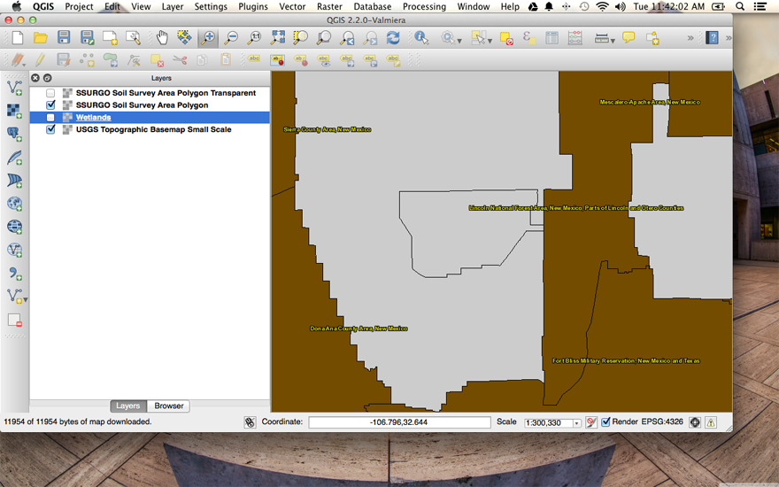

Elisa Cedillos
April 9 2014
Milestone 10
Question 1
Add three WMS layers to a new map project in QGIS, with one coming from each of the following collections of WMS services.
In your write-up include the names of the layers you added, which service they came from, and screen shots (one for for each of the added layers) showing each of them in the QGIS client interface
- Layer: 0 (Title: USGS Topographic Base Map Small Scale)
Service:WMS

- Layer: surveyareapoly
Service: WMS

- Layer: 0 (Title: wetlands)
Service: WMS
Question 2
Add three WFS layers to the same QGIS project...
two from the RGIS data browser (http://rgis.unm.edu/browsedata)
one based on the USGS GeoNames WFS service: http://services.nationalmap.gov/arcgis/services/WFS/geonames/MapServer/WFSServer?request=GetCapabilities&service=WFS
- Request:
Service:WFS
Name: public_NFHL:Levees

- Request:
Service:WFS
Name: clovisshp

- Request:
Service:WFS
Name: nm_minown_2012